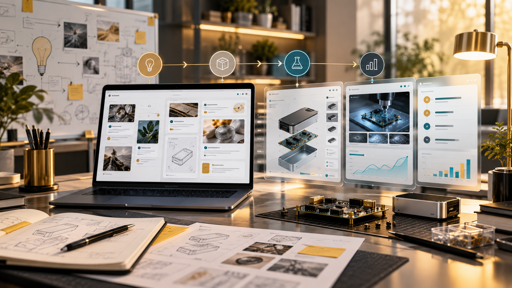

AI & Digital Worker
AI Agent, mô hình hỗ trợ tự động hóa nghiệp vụ và khám phá khả năng của học máy.
Liên hệ Lab: AI & ML PlaygroundR&D × Technology
Khám phá những lĩnh vực công nghệ mà Intelex nghiên cứu, các sáng kiến R&D và cách chúng kết nối với môi trường thực hành.

Technology Focus
Các mô tả dưới đây là định hướng nghiên cứu và năng lực thực hành, không mặc định là sản phẩm thương mại đã ra mắt.
AI Agent, mô hình hỗ trợ tự động hóa nghiệp vụ và khám phá khả năng của học máy.
Liên hệ Lab: AI & ML PlaygroundXử lý, tổng hợp và trực quan hóa dữ liệu hỗ trợ hiểu vấn đề.
Liên hệ Lab: Data Explorer / Chart StudioTín hiệu cảm biến, hệ thống nhúng, Digital Twin và ứng dụng mô phỏng.
Liên hệ Lab: Circuit / IoT / Smart FarmThiết kế quy trình, tái sử dụng nền tảng và kiến trúc hệ thống.
Liên hệ Lab: Workflow / Git / DevOpsR&D Catalogue
Chưa có sáng kiến phù hợp với bộ lọc này.
Research Path
Mỗi Lab là môi trường có thể thử nghiệm một phần nguyên lý công nghệ; sự tồn tại của Lab không chứng minh sản phẩm thương mại tương ứng đã hoàn thành.
Collaboration
Kết nối cùng Intelex để thảo luận hướng nghiên cứu, thử nghiệm POC và khả năng hợp tác phù hợp.